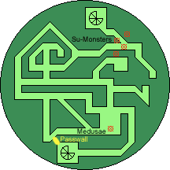
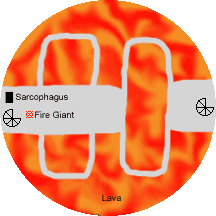
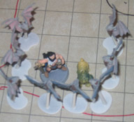
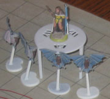

Chapter 6: Nature Trail To Hell

aving just gained the ability to cast 5th level Arcane spells and itching to use them, Edwin memorized and cast Prying Eyes. This created a total of thirteen disembodied floating eyes, each approximately the size of an orange, capable of following simple instructions.
Search the tower. If you find a staircase ascend and search the next level. Return when done searching, if attacked, or after two hours.
The party had barely stepped into the first corridor of the hedge maze when suddenly a large, overly muscled monkey dropped from the trees onto Katriana's back, clawing and biting. Katriana responded by invoking Produce Flame, but was unable to reach the creature. Her companion viper (Zanos) bit the monkey for slight damage, quite possibly the first time Zanos has been able to take a useful action. Edwin hurt the monkey with five Magic Missiles, and Chaden landed an arrow. Rai bit the creature and Seremak landed a blow with his sword just before the monkey clawed at Katriana's ribs again. Chaden landed two more arrows, killing it. The creature was a Su-Monster, a prehistoric monstrous primate. Su-Monsters normally have psionic abilities, but none of the adventurers had noticed such attacks from it. Katriana said they normally congregated in small groups, so the adventurers kept their guard up. A few minutes later three more Su-Monsters dropped from the trees. One landed on Seremak, and another on Chaden. The third had targeted Katriana but was repulsed back up into the trees by Edwin's readied Gust of Wind.
The monster grappling Seremak clawed ineffectively at his armor, then had to endure a pummeling from Grapthar's flaming battleaxe, Rai's powerful jaws, and a Magic Missile from Edwin for good measure. It survived the round (barely) and worked its claws through the joints of Seremak's armor to dig deeply into his flesh, inflicting 28 points of damage. [Editor's note: These were good rolls, the most the monster can possibly inflict is 29.] Seremak promptly killed it.
Meanwhile the creature attacking Chaden was hit by her Orb of Acid and singed by Katriana's Produce Flame before Edwin's remaining four Magic Missiles slammed into it. This was not its lucky day. It bit and clawed at Chaden even as she cast a second Orb of Acid. Her third Orb of Acid inflicted a critical hit for 20 points of damage, killing it.
The Su-Monster hit by Gust of Wind seemed surprised to find itself back up in the trees, but recovered quickly. Kaerick landed an arrow before it decided to make another try for Katriana. This proved to be a fatal mistake: Katriana wildshaped into a tiger as it fell. The tiger snatched the primate out of the air and latched on with both foreclaws before rolling over onto her side to disembowel it with powerful hind legs. Inflicting 51 points of damage in a single attack was sufficient to scatter monkey guts across the clearing. Katriana calmly sat on her haunches and began to clean her fur.
Kaerick tried to use the Wand of Siryl to heal Seremak, but determined that she needed the command word to activate it. There was no hint of the command word on the wand itself, but she believed a Legend Lore spell would reveal it. Therefore Katriana (still in tiger form) cast sufficient Cure spells to bring the injured back to full strength, then padded ahead through the hedge maze.
Concluding that the Prying Eyes would not be returning, Edwin cast Arcane Eye and directed it through the maze of greenery. Though it forked and doubled back numerous times, eventually all paths converged at a clearing on the far side of the tower, beyond which lay the staircase giving access to the next level. A humanoid figure knelt in the clearing, approximately five feet tall and clothed in a deeply hooded robe such as a monk might wear. Edwin sent the Arcane Eye to peek under the hood of the kneeling creature. He glimpsed a female face of stunning ugliness, with a dozen vipers sprouting from its head as hair. Edwin made his Fortitude save to avoid being turned to stone by the medusa, and suddenly noticed thirteen small spherical stones scattered throughout the clearing: the Prying Eyes had been petrified. The party decided to bypass the unnecessary whoop-ass, and threaded their way through the hedge maze to a point where Edwin's Passwall gave access to the staircase.

Just before it expired Edwin sent the Arcane Eye up to scout the next level. If the first level of the tower resembled the elemental plane of Air and the second the plane of Earth, the next level was clearly Fire. A stone path rose a mere three feet above a seething pit of lava. At the far end stood a fire giant next to a pile of boulders, with a stone sarcophagus nearby.
The Ecology of the Fire Giant
Fire giants on average are twice as tall as a human, though they are broader of shoulder and belly. They strongly resemble a twelve foot tall dwarf with black skin and red hair, and weigh an average of seven thousand pounds. Fire Giants are fond of hurling boulders at their foes, and tend to be quite practiced at it.
--This Chronicler has no idea who made the Knowledge(Dungeoneering) check
The Plan
- Katriana wildshapes into eagle form
- Edwin and Katriana both cast Ice Storm, targeting the Fire Giant.
- Edwin casts Fog Cloud centered roughly on the giant to obscure its vision, and Bigby's Interposing Hand to hamper its boulder throwing
- Katriana flies across the open region of lava, while Edwin will Dimension Door with Grapthar, Seremak, and Rai to charge the giant
- Chaden and Kaerick stay on the ledge near the staircase, launching arrows at the Fire Giant.
The Buffs
- Seremak : Fire Shield - chill, Protection from Energy (courtesy Katriana), Greater Invisibility, Bull's Strength, True Strike
- Rai : Fire Shield - chill, Protection from Energy, Greater Invisibility, Bull's Strength, True Strike (all shared with Seremak) Fortify Familiar
- Katriana : Mage Armor (courtesy Edwin)
- Edwin : Mage Armor
- Grapthar : Resist Energy - fire (courtesy Edwin), Displacement (courtesy Katriana)
- Chaden : True Strike


The Result
After making themselves Invisible Seremak and Rai crept up the staircase onto the ledge and readied themselves for combat. Katriana, wildshaped into an Eagle, flew out from the staircase at the same moment that Edwin stepped up onto the stone platform. Catching the Fire Giant by surprise they were able to cast their Ice Storm spells, though the damage rolls were poor (27 points total, even after accounting for the giant's vulnerability to cold). Twelve Fire Bats suddenly flew up from the lava. Eight surrounded Seremak & Rai while four flew to surround Katriana. Seremak and Rai's Greater Invisibility made not a whit of difference, the bats could see them via echolocation.
The rest of the combat will be conducted at the next gaming session.
Photos courtesy Dave & Helen Brubeck
Prev: Jurassic Party |
Entrance |
Next: 12 Rounds of Whoop-Ass